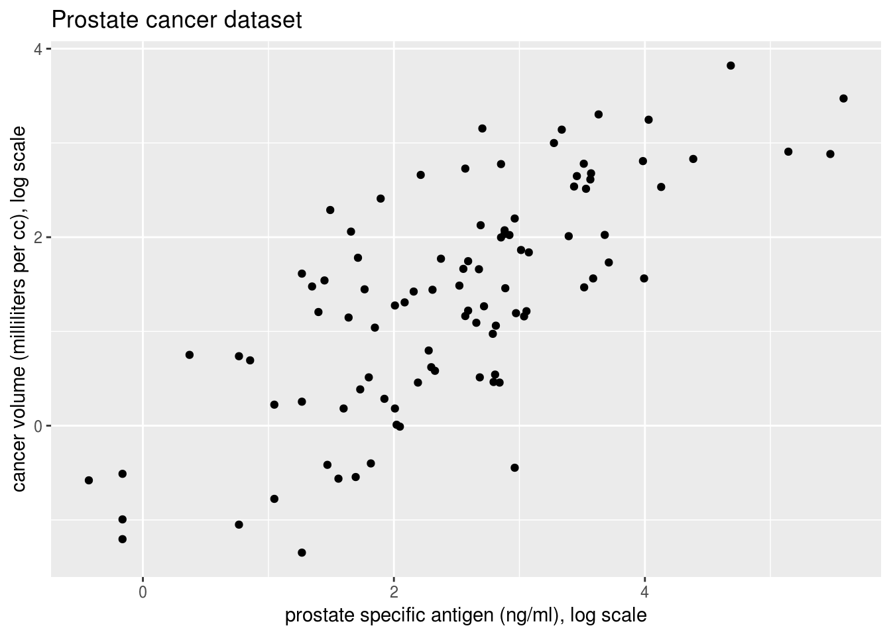
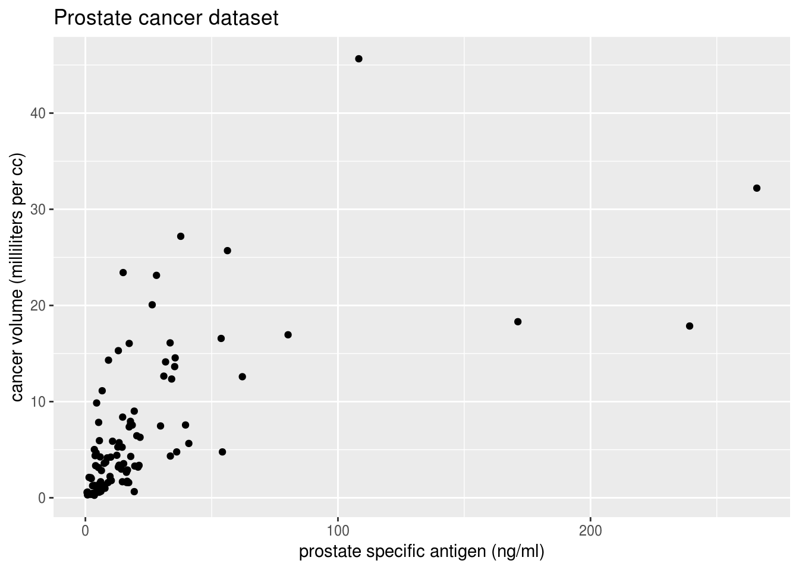
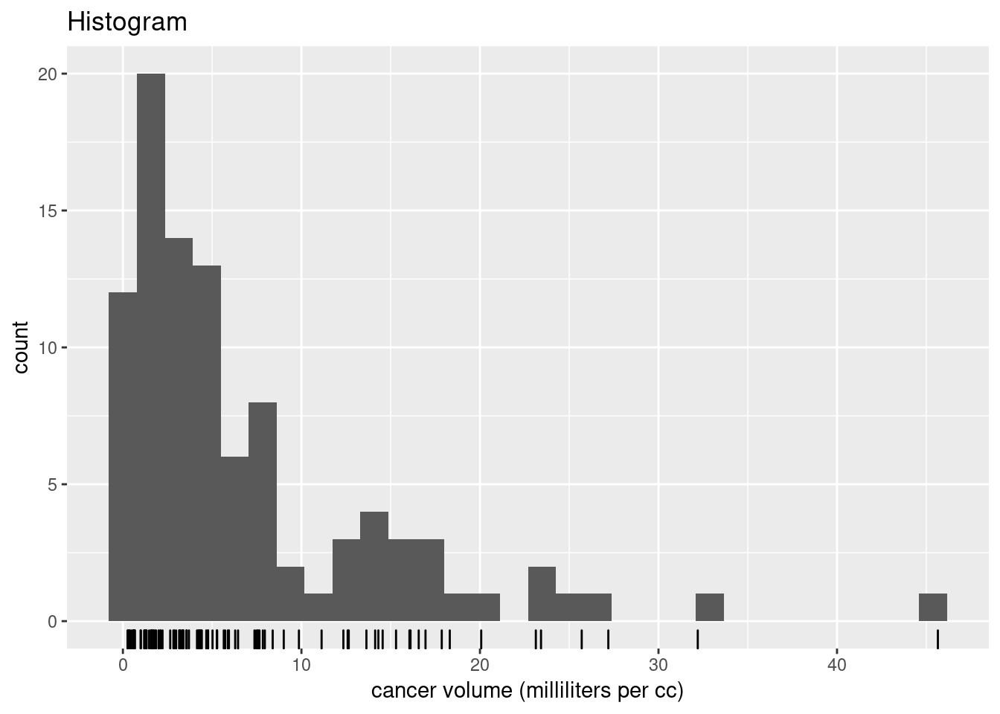

2.9 Solutions
The following questions refer to the dataset prostate from the package ElemStatLearn.
- Briefly describe the data set.
Running ?ElemStatLearn::prostate gives the help file for the data set. Since we will be coming back to this example, detailed informations are provided below.
This data set was extracted from
Stamey, T.A., Kabalin, J.N., McNeal, J.E., Johnstone, I.M., Freiha, F., Redwine, E.A. and Yang, N. (1989) Prostate specific antigen in the diagnosis and treatment of adenocarcinoma of the prostate: II. radical prostatectomy treated patients, Journal of Urology 141(5), 1076–1083.
This data set is described in Wakefield (2013), pp. 5-6.
The data were collected on \(n=97\) men before radical prostatectomy, a major surgical operation that removes the entire prostate gland along with some surrounding tissue.
In Stamey et al. (1989), prostate specific antigen (PSA) was proposed as a preoperative marker to predict the clinical stage of cancer. As well as modeling the stage of cancer as a function of PSA, the authors also examined PSA as a function of age and seven other histological and morphometric covariates.
The BPH and capsular penetration variables originally contained zeros, and a small number was substituted before the log transform was taken. It is not clear from the original paper why the log transform was taken though PSA varies over a wide range, and so linearity of the mean model may be aided by the log transform. It is also not clear why the variable PGS45 was constructed.
The data set contains the following variables:
lcavol: log of cancer volume, measured in milliliters (cc). The area of cancer was measured from digitized images and multiplied by a thickness to produce a volume.lweight: log of the prostate weight, measured in grams.age: The age of the patient, in years.lbph: log of the amount of benign prostatic hyperplasia (BPH), a noncancerous enlargement of the prostate gland, as an area in a digitized image and reported in cm\({}^2\).svi: seminal vesicle invasion, a 0/1 indicator of whether prostate cancer cells have invaded the seminal vesicle.lcp: log of the capsular penetration, which represents the level of extension of cancer into the capsule (the fibrous tissue which acts as an outer lining of the prostate gland), measured as the linear extent of penetration, in cm.gleason: Gleason score, a measure of the degree of aggressiveness of the tumor. The Gleason grading system assigns a grade (1–5) to each of the two largest areas of cancer in the tissue samples with 1 being the least aggressive and 5 the most aggressive; the two grades are then added together to produce the Gleason score.pgg45: percentage of Gleason scores that are 4 or 5.lpsa: log of prostate specific antigen (PSA), a concentration measured in ng/m
To load the data set, use
#Install package if you get an error message
#install.packages("ElemStatLearn")
data(prostate, package = "ElemStatLearn")
?ElemStatLearn::prostate
attach(prostate) The command attach allows you to access column (variables) without using $ by adding the columns of the data frame to your work environment. Always detach the data once you are done with your analysis to avoid overriding or hidding variables.
- Look at summaries of
lbph. What likely value was imputed in places of zeros inlbph(before taking the logarithm)?
## [1] 0.25 0.25 0.25 0.25 0.25 0.25## [1] 0.25
It seems likely that in order to take a logarithm, zeros were changed to 0.25. As such, we have to be careful with the interpretation of this coefficient if we include bph in the regression.
- Produce a plot of the pair of variables
lcavolandlpsaon the log and on the original scale. Comment on the relationship betweenlcavolandlpsa.
par(mfrow = c(1, 2)) #graphical parameters: two graphs per window
#Function plot is plot(x = , y = ) or plot(y ~ x)
#this works for vectors! (error message otherwise)
plot(exp(lcavol) ~ exp(lpsa),
ylab = "Cancer volume (milliliters per cc)", #y-axis label
xlab = "prostate specific antigen (ng/ml)", #x-axis label
main = "Prostate cancer dataset", #title
bty = "l", pch = 20) #bty: remove box, only x-y axis
#pch: type of plotting symbol (small filled circle)
plot(y = lcavol, x = lpsa,
ylab = "cancer volume (milliliters per cc), log scale",
xlab = "prostate specific antigen (ng/ml), log scale",
main = "Prostate cancer dataset",
bty = "l", pch = 20)
hist(exp(lcavol), xlab = "cancer volume (milliliters per cc)", main = "Histogram")
rug(exp(lcavol))
hist(exp(lpsa), xlab = "prostate specific antigen (ng/ml)", main = "Histogram")
rug(exp(lpsa))With ggplot2, the same graphs
library(ggplot2)
ggplot(data = prostate, aes(y = lcavol, x = lpsa)) +
geom_point() +
labs(x = "prostate specific antigen (ng/ml), log scale",
y = "cancer volume (milliliters per cc), log scale",
title = "Prostate cancer dataset")
ggplot(data = prostate, aes(y = exp(lcavol), x = exp(lpsa))) +
geom_point() +
labs(x = "prostate specific antigen (ng/ml)",
y = "cancer volume (milliliters per cc)",
title = "Prostate cancer dataset")
ggplot(data = prostate, aes(x = exp(lcavol))) +
geom_histogram(bins = 30) + geom_rug() +
labs(x = "cancer volume (milliliters per cc)",
title = "Histogram")
We can see that both variables are positive and positively skewed, so a log transform may lead to a more linear relationship, as indicated by the pairs plot. A multiplicative model on the original scale is thus reasonable.
- Fit a linear model using the log cancer volume as response variable, including a constant and the log prostate specific antigen as covariates. Obtain numerically the OLS estimates \(\hat{\boldsymbol{\beta}}\) of the parameters, the fitted values \(\hat{\boldsymbol{y}}\) and the residuals \(\boldsymbol{e}\) using the formulae given in class.
##
## Call:
## lm(formula = lcavol ~ lpsa, data = prostate)
##
## Residuals:
## Min 1Q Median 3Q Max
## -2.15949 -0.59384 0.05034 0.50826 1.67751
##
## Coefficients:
## Estimate Std. Error t value Pr(>|t|)
## (Intercept) -0.50858 0.19419 -2.619 0.0103 *
## lpsa 0.74992 0.07109 10.548 <2e-16 ***
## ---
## Signif. codes: 0 '***' 0.001 '**' 0.01 '*' 0.05 '.' 0.1 ' ' 1
##
## Residual standard error: 0.8041 on 95 degrees of freedom
## Multiple R-squared: 0.5394, Adjusted R-squared: 0.5346
## F-statistic: 111.3 on 1 and 95 DF, p-value: < 2.2e-16#Create response vector and design matrix
y <- lcavol
X <- cbind(1, lpsa)
#Create function to compute coefs "by hand"
coefs_vals <- function(x, y){
c(solve(crossprod(x), crossprod(x, y)))
}
# Compute coefficients, fitted values and residuals
beta_hat <- coefs_vals(x = X, y = lcavol)
yhat <- c(X %*% beta_hat)
e <- y - yhatThe function lm fits a linear model by least squares to a dataset. The function summary will return coefficient estimates, standard errors and various other statistics and print them in the console.
The formula for lm must be of the form y ~, and any combination of the variables appearing on the right hand side of the ~ will be added as new columns of the design matrix. By default, the latter includes a column of ones. To remove it, use +0 or -1. If you have two covariates x1 and x2, the model x1+x2 will have for \(i\)th row \((1, x_{i1}, x_{i2})\), while the model x1+x2+x1:x2\(\equiv\)x1*x2 will include an interaction term x1:x2. The latter just means product, so the \(i\)th row of the design matrix would be \((1, x_{i1}, x_{i2}, x_{i1}x_{i2})\). R will drop any collinear vectors, warn you and report NA in the summary output.
- Compare the quantities you obtained in the last question with the output of the function
lm.
## [1] -0.5085796 0.7499189## (Intercept) lpsa
## -0.5085796 0.7499189## [1] TRUE## [1] TRUE## [1] TRUE- Add the fitted regression line to the scatterplot of lcavol against lpsa .
par(mfrow = c(1, 1))
plot(lcavol ~ lpsa, data = prostate,
ylab = "Cancer volume (milliliters per cc), log scale",
xlab = "prostate specific antigen (ng/ml), log scale",
main = "Prostate cancer dataset",
bty = "l", pch = 20)
abline(fit, lwd = 2) #simply add regression line, lwd is line widthggplot(data = prostate, aes(y = lcavol, x = lpsa)) +
geom_point() +
labs(x = "prostate specific antigen (ng/ml), log scale",
y = "cancer volume (milliliters per cc), log scale",
title = "Prostate cancer dataset") +
geom_smooth(method = "lm", se = FALSE)
- Interpret the changes in cancer volume (not the log cancer volume), including any units in your interpretations.
The interpretation is as follows. We fit \[\log(\texttt{cavol}_i) = \beta_0 + \beta_1 \log(\texttt{psa}_i) + \varepsilon_i.\]
On the original scale, this translates into the multiplicative model \(\texttt{cavol}_i= \exp^{\beta_0}\texttt{psa}_i^{\beta_1}\exp(\varepsilon_i)\). The effect of an increase of one ng/mll of prostate specific antigen depends on the specific level of \(\texttt{psa}\), \((\texttt{psa}_1/\texttt{psa}_2)^{\beta_1}\) for levels \(\texttt{psa}_1\) and \(\texttt{psa}_2\). For example, an increase of the PSA level from 5.25 ng/mll to 6.15 ng/mll leads an increase of the volume of cancer of prostate cancer of 1.13 milliliters per cubic centimeter.
- Using the results of Exercise 4.2, obtain the orthogonal projection matrix \(\mathbf{H}_{\mathbf{X}}\) and \(\hat{\boldsymbol{\beta}}\) using a SVD decomposition (
svd). Check your output.
#Hat matrix
Hmat <- X %*% solve(crossprod(X)) %*% t(X)
#SVD decomposition of X
svdX <- svd(X)
#OLS coefficients
beta_hat_svd <- svdX$v %*% (t(svdX$u) %*% lcavol / svdX$d)
Hmat_svd <- tcrossprod(svdX$u)
#Check that both quantities are equal
all.equal(Hmat, Hmat_svd, check.attributes = FALSE) ## [1] TRUE#use check.attributes = FALSE
#if you want to compare only the values
#and not e.g. the column names
all.equal(c(beta_hat_svd), beta_hat)## [1] TRUE- Compute the \(R^2_c\) coefficient and compare with the one in summary output of the
lmfunction. What can you say about the explanatory power of the covariatelpsa?
R2c <- sum((yhat-mean(y))^2)/sum((y-mean(y))^2)
R2c_lm <- summary(fit)$r.squared #this is centered version
all.equal(R2c, R2c_lm)## [1] TRUEThe value of \(R^2_c\) is about 0.54, so about half the variability can be explained by the model. There is reasonable explanatory power. Note that presence of cancer causes the prostate specific antigens to increase (not the other way around!). A linear model could nevertheless be sensible here if we wished to obtain a non-invasive detector for predicting presence/absence of cancer, assuming the antigen is present in blood samples, but that detection of cancer would require otherwise a biopsy.